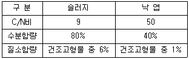
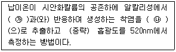
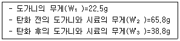
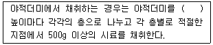
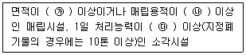
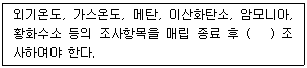

폐기물처리산업기사 (2017-05-07 기출문제)
1과목: 폐기물개론
1. 매립 시 쓰레기 파쇄로 인한 이점으로 옳은 것은?
- 압축장비가 없어도 고밀도의 매립이 가능하다.
- 매립 시 복토 요구량이 증가된다.
- 폐기물 입자의 표면적이 감소되어 미생물 작용이 촉진된다.
- 매립 시 밀도가 감소하여 폐기물의 비산이 증가한다.
(정답률: 68%)

2. 난분해성 유기화합물의 생물학적 반응이 아닌 것은?
- 탈수소반응(가수분해반응)
- 고리분할
- 탈알킬화
- 탈할로겐화
(정답률: 83%)
3. 유해 폐기물을 소각할 때 발생하는 물질로서 광화학 스모그의 원인이 되는 주된 물질은?
- 일산화탄소(CO)
- 염화수소(HCl)
- 일산화질소(NO)
- 이산화황(SO2)
(정답률: 58%)
4. 쓰레기의 운송기술 중 관거를 이용한 공기수송에 관한 설명으로 틀린 것은?
- 진공수송의 경제적인 수송거리는 약 2km 정도이다.
- 진공수송에 있어서 진공도는 최대 0.5kg/cm2Vac 정도이다.
- 가압수송으로 연속수송을 하고자 할 경우에는 크기가 불균일해서 부착되기 쉽고 유동성이 나쁜 쓰레기를 정압으로 연속 정량 공급하는 것이 곤란하다.
- 가압수송은 진공수송에 비하여 경제적이나, 수송거리가 약 1km 내외로 짧은 것이 단점이다.
(정답률: 66%)
5. 채취한 쓰레기 시료에 대한 성상분석 절차는?
- 밀도 측정 → 물리적 조성 → 건조 → 분류
- 밀도 측정 → 물리적 조성 → 분류 → 건조
- 물리적 조성 → 밀도 측정 → 건조 → 분류
- 물리적 조성 → 밀도 측정 → 분류 → 건조
(정답률: 84%)
6. 다음 중 폐기물 파쇄기에 대한 설명으로 틀린 것은?
- 전단파쇄기는 주로 목재류, 플라스틱류 및 종이류를 파쇄하는 데 이용된다.
- 전단파쇄기는 대체로 충격파쇄기에 비해 파쇄속도가 느리고 이물질의 혼입에 대하여 약하다.
- 충격파쇄기는 기계의 압착력을 이용하는 것으로 주로 왕복식을 적용한다.
- 압축파쇄기는 파쇄기의 마모가 적고 비용이 적게 소요되는 장점이 있다.
(정답률: 80%)
7. 도시폐기물 최종 분석 결과를 Dulong 공식으로 발열량을 계산하고자 할 때 필요하지 않은 성분은?
- H
- C
- S
- Cl
(정답률: 94%)
8. 지정폐기물 중 부식성 폐기물에 포함되는 것은?
- 폐산
- 광재
- 소각재
- 폐촉매
(정답률: 75%)
9. 수분이 75%인 젖은 쓰레기를 풍건시켜서 수분이 60%로 되었다면, 건조 전 쓰레기에 비하여 감소된 중량(%)은? (단, 쓰레기 비중은 1.0으로 가정)
- 27.5
- 37.5
- 57.5
- 67.5
(정답률: 67%)
10. 폐기물의 밀도 측정에 관한 설명으로 옳은 것은?
- 미리 부피를 알고 있는 용기를 측정에 사용한다.
- 밀도 측정 시 용기 내 쓰레기를 다지기 위해서는 50cm 높이에서 낙하시킨다.
- 밀도 측정을 위해서는 재빨리 과잉의 수분을 제거한다.
- 측정되는 쓰레기의 밀도는 진밀도이다.
(정답률: 69%)
11. 슬러지 내 존재하는 물의 형태 중 아주 많은 양을 차지하며 고형 물질과 직접 결합해 있지 않기 때문에 농축 등의 방법으로 용이하게 분리할 수 있는 것은?
- 부착수
- 모관결합수
- 간극수
- 내부수
(정답률: 88%)
12. 폐기물의 관리에 있어서 중점을 두어야 하는 우선순위가 가장 높은 것은?
- 재이용
- 재활용
- 퇴비화
- 감량화
(정답률: 83%)
13. Worrell의 제안식을 적용한 선별결과가 다음과 같을 때, 선별효율(%)은? (단, 투입량=10톤/일, 회수량=7톤/일(회수대상물질 5톤/일), 제거량=3톤/일(회수대상물질 0.5톤/일))
- 약 50
- 약 60
- 약 70
- 약 80
(정답률: 38%)
14. 폐기물 발생량 조사방법 중 물질수지법에 관한 설명으로 가장 거리가 먼 것은?
- 물질수지를 세울 수 있는 상세한 데이터가 있는 경우에 가능하다.
- 주로 생활폐기물의 종류별 발생량 추산에 사용된다.
- 조사하고자 하는 계(system)의 경계를 명확하게 설정하여야 한다.
- 계(system)로 유입되는 모든 물질들과 유출되는 물질들 간의 물질수지를 세움으로써 폐기물 발생량을 추정한다.
(정답률: 86%)
15. 함수율 80%인 음식쓰레기와 함수율 50%인 퇴비를 3：1의 무게비로 혼합하면 함수율(%)은? (단, 비중은 1.0 기준)
- 66.5%
- 68.5%
- 72.5%
- 74.5%
(정답률: 79%)
16. 청소상태를 평가하는 평가법 중 서비스를 받는 시민들의 만족도를 설문조사하여 계산되는 사용자 만족도지수는?
- CEI
- USI
- PPI
- CPI
(정답률: 78%)
17. 쓰레기 발생량이 증가하는 이유로 가장 거리가 먼 것은?
- 도시의 규모가 커진다.
- 수집빈도가 낮아진다.
- 쓰레기통이 커진다.
- 생활수준이 높아진다.
(정답률: 90%)
18. 쓰레기를 소각했을 때 남은 재의 중량은 쓰레기 중량의 약 1/5이다. 쓰레기 95ton을 소각했을 때 재의 용적이 7m3라고 하면 재의 밀도(ton/m3)는?
- 약 2.31
- 약 2.51
- 약 2.71
- 약 2.91
(정답률: 76%)
19. 폐기물 수거노선을 결정할 때 고려하여야 할 사항으로 틀린 것은?
- 가능한 한 시계방향으로 수거노선을 정한다.
- 유턴(U-turn) 운행은 피한다.
- 수거의 시작은 차고와 가까운 곳에서 한다.
- 저지대에서 고지대로 상향식으로 운행한다.
(정답률: 89%)
20. 폐기물 압축을 위한 장치는 압력의 강도에 의해 분류할 수 있다. 저압력 압축기의 기준으로 알맞은 것은?
- 5기압 이하
- 7기압 이하
- 10기압 이하
- 12기압 이하
(정답률: 62%)
2과목: 폐기물처리기술
21. 연소가스 탈황 시 발생된 슬러지(FGD Sludge) 처리에 많이 사용되는 고형화 방법으로 가장 적합한 것은?
- 자가 시멘트법
- 시멘트 기초법
- 피막 시멘트법
- 석회 기초법
(정답률: 83%)
22. 3,785m3/day 규모의 하수처리장 유입수의 BOD와 SS 농도가 각각 200mg/L라고 하고 1차 침전에 의하여 SS는 50%, BOD는 30%(SS 제거에 따른 감소)가 제거된다고 할 때 1차 슬러지의 양(kg/day)은? (단, 비중은 1.0, 고형물 기준)
- 378.5
- 400.1
- 512.4
- 6⑤.6
(정답률: 49%)
23. 폐기물 소각로의 폐열회수시설 중 가장 낮은 온도에서 열회수가 이루어지는 것은?
- 과열기
- 재열기
- 절탄기
- 공기예열기
(정답률: 67%)
24. Humus(부식질)의 특징으로 틀린 것은?
- 악취가 거의 없으며 흙냄새가 난다.
- 물 보유력과 양이온교환능력이 좋다.
- 탄질비(C/N)가 거의 1에 가깝다.
- 짙은 갈색을 띤다.
(정답률: 71%)
25. 침출수의 수질 특성이 아닌 것은?
- 암모니아성 질소의 농도가 질산성 질소 농도보다 높다.
- 침출수의 pH는 6 ~ 8 사이이며, 침출수에 접촉하는 매립가스 중 CO2 분압에 의해서도 변한다.
- COD의 경우, 매립 초기는 BOD값보다 약간 높으나 시간이 흐름에 따라 BOD값보다 낮아진다.
- 침출수 중 중금속 농도는 산생성 단계에서는 상대적으로 높고, 메탄 발효 단계에서는 상대적으로 낮다.
(정답률: 68%)
26. 매립 시 표면 차수막에 관한 설명으로 가장 거리가 먼 것은?
- 지중에 수평방향의 차수층이 존재하는 경우에 적용한다.
- 시공 시에는 눈으로 차수성 확인이 가능하나 매립 후에는 곤란하다.
- 지하수 집배수시설이 필요하다.
- 차수막 단위면적당 공사비는 싸지만 매립지 전체를 시공하는 경우가 많아 총 공사비는 비싸다.
(정답률: 65%)
27. 도시 쓰레기의 밀도는 0.5ton/m3, 도시 쓰레기의 발생량은 400,000kg/day 일 때 이를 매립할 경우 매립지 사용일수(day)는? (단, 매립지 용량=105m3, 다짐에 의한 쓰레기 부피감소율=50%)
- 125
- 250
- 312
- 421
(정답률: 56%)
28. 수분함량이 97%인 슬러지의 비중은? (단, 고형물의 비중은 1.35)
- 약 1.062
- 약 1.042
- 약 1.028
- 약 1.008
(정답률: 65%)
29. 유기성 폐기물 퇴비화의 단점이라 할 수 없는 것은?
- 낮은 비료가치
- 부지선정의 어려움
- 퇴비화 과정 중 외부 가온 필요
- 악취발생 가능성
(정답률: 77%)
30. 슬러지 처분을 위한 고형화의 목적이라 볼 수 없는 것은?
- 슬러지의 취급이 용이
- 부피의 감소에 따른 운반비용 절감효과
- 슬러지 내의 각종 유해물질의 용출 방지
- 고형화에 의하여 토목 및 건축 재료로 자원화 가능
(정답률: 71%)
31. 슬러지를 낙엽과 혼합하여 퇴비화하려 한다. 퇴비화 대상 혼합물의 C/N비를 30으로 할 때, 낙엽 1kg당 필요한 슬러지의 양(kg)은? (단, 고형물 건조중량 기준, 비중=1.0 기준)

- 0.48
- 0.58
- 0.68
- 0.78
(정답률: 33%)
32. 소각을 위한 연소기 중 화격자 연소기에 관한 설명으로 틀린 것은?
- 기계적 작동으로 교반력이 강하다.
- 연속적인 소각과 배출이 가능하다.
- 체류시간이 길다.
- 국부가열이 발생할 염려가 있다.
(정답률: 56%)
33. 매립지 내에서 분해단계(4단계) 중 호기성 단계에 관한 설명으로 적절하지 못한 것은?
- N2의 발생이 급격히 증가한다.
- O2가 소모된다.
- 주요 생성기체는 CO2이다.
- 매립물의 분해속도에 따라 수일에서 수개월 동안 지속된다.
(정답률: 68%)
34. 오염된 농경지의 정화를 위해 다른 장소로부터 비오염 토양을 운반하여 혼합하는 정화기술은?
- 객토
- 반전
- 희석
- 배토
(정답률: 92%)
35. 쓰레기 열분해 시 열분해온도(열공급속도)가 상승함에 따라 발생량이 감소하는 가스는?
- H2
- CH4
- CO
- CO2
(정답률: 60%)
36. 매립장에서 적용되는 점토와 합성수지계 차수막에 관한 설명으로 틀린 것은?
- 점토는 벤토나이트 첨가 시 차수성이 더 좋아진다.
- 점토는 바닥처리가 나쁘면 부등침하 및 균열 위험이 있다.
- 합성수지계 차수막은 점토에 비하여 내구성이 높으나 열화 위험이 있다.
- 합성수지계 차수막은 점토에 비하여 가격은 저렴하나 시공이 어렵다.
(정답률: 72%)
37. 유동층 소각로의 장점이 아닌 것은?
- 폐기물의 크기가 50mm 이상인 조대폐기물의 소각에 용이하다.
- 반응시간이 빨라 소각시간이 짧다.
- 기계의 구동부분이 적어 고장률이 적다.
- 단기간 정지 후 가동 시에 보조연료 없이 정상가동이 가능하다.
(정답률: 66%)
38. 침출수를 혐기성 여상으로 처리할 때 유입유량 3,000m3/day이고 BOD가 600mg/L이며 처리효율이 95%일 때 발생되는 메탄가스의 양(Sm3/day)은? (단, 1.5m3 가스/kg BOD, 가스 중 메탄 함량 60%, 표준상태 기준)
- 약 1,270
- 약 1,367
- 약 1,420
- 약 1,539
(정답률: 50%)
39. 소각 시 다이옥신이 생성될 수 있는 가능성이 가장 큰 물질은?
- 노말헥산
- 에탄올
- PVC
- 오존
(정답률: 78%)
40. 측정한 소화조 가스의 열량의 5,400kcal/m3일 때 메탄가스의 함유량(%)은? (단, 메탄가스 열량=9,000kcal/m3, 메탄 이외의 가스는 불연소성이라 가정)
- 55
- 60
- 65
- 70
(정답률: 60%)
3과목: 폐기물 공정시험 기준(방법)
41. 납을 자외선/가시선 분광법으로 측정하는 방법을 설명한 것으로 ( )에 알맞은 시약은?

- ㉮ 디티존, ㉯ 사염화탄소
- ㉮ 디티존, ㉯ 클로로포름
- ㉮ DDTC-MIBK, ㉯ 노말헥산
- ㉮ DDTC-MIBK, ㉯ 아세톤
(정답률: 62%)
42. 다음 pH 표준액 중 pH 4에 가장 근접한 용액은?
- 수산염 표준액
- 프탈산염 표준액
- 인산염 표준액
- 붕산염 표준액
(정답률: 73%)
43. 대상 폐기기물의 양이 600톤인 경우 현장 시료의 최소수는?
- 30
- 36
- 50
- 60
(정답률: 74%)
44. 원자흡수분광광도법으로 크롬을 정량할 때 전처리조작으로 KMnO4를 사용하는 목적은?
- 철이나 니켈 금속 등 방해물질을 제거하기 위해서다.
- 시료 중의 6가크롬을 3가크롬으로 환원시키기 위해서다.
- 시료 중의 3가크롬을 6가크롬으로 산화시키기 위해서다.
- 디페닐카르바지드와 반응을 쉽게 하기 위해서다.
(정답률: 79%)
45. 유도결합플라스마-원자발광분광법에 의한 카드뮴 분석방법에 관한 설명으로 틀린 것은?
- 정량범위는 사용하는 장치 및 측정조건에 따라 다르지만 330nm에서 0.004 ~ 0.3mg/L 정도이다.
- 아르곤가스는 액화 또는 압축 아르곤으로서 99.99V/V% 이상의 순도를 갖는 것이어야 한다.
- 시료용액의 발광강도를 측정하고 미리 작성한 검정곡선으로부터 카드뮴의 양을 구하여 농도를 산출한다.
- 검정곡선 작성 시 카드뮴 표준용액과 질산, 염산, 정제수가 사용된다.
(정답률: 71%)
46. 용출실험 결과 시료 중의 수분함량을 보정해주기 위해 적용(곱)하는 식으로 옳은 것은? (단, 함수율 85% 이상인 시료에 한함)
- 85/{100－함수율(%)}
- {100－함수율(%)/85
- 15/{100－함수율(%)}
- {100－함수율(%)}/15
(정답률: 84%)
47. 폐기물공정시험기준상의 용어로 ( )에 들어갈 수치 중 가장 작은 것은?
- “방울수”는 ( )℃에서 정제수 20방울을 적하시켰을 때 부피가 약 1mL가 된다.
- “냉수”는 ( )℃ 이하를 말한다.
- “약”이라 함은 기재된 양에 대해서 ±( )% 이상의 차가 있어서는 안 된다.
- “진공”이라 함은 ( )mmHg 이하의 압력을 말한다.
(정답률: 71%)
48. 폐기물공정시험기준에 의한 온도의 기준이 틀린 것은?
- 표준온도 : 0℃ 이하
- 상온 : 15 ~ 25℃
- 실온 : 25 ~ 45℃
- 찬 곳 : 0 ~ 15℃의 곳(따로 규정이 없는 경우)
(정답률: 76%)
49. 수분 40%, 고형물 60%인 쓰레기의 강열감량 및 유기물 함량을 분석한 결과가 다음과 같았다. 이 쓰레기의 유기물 함량(%)은?

- 약 27
- 약 37
- 약 47
- 약 57
(정답률: 48%)
50. 자외선/가시선 분광법에 의한 비소의 측정방법으로 옳은 것은?
- 적자색의 흡광도를 430nm에서 측정
- 적자색의 흡광도를 530nm에서 측정
- 청색의 흡광도를 430nm에서 측정
- 청색의 흡광도를 530nm에서 측정
(정답률: 67%)
51. 자외부 파장 범위에서 일반적으로 사용하는 흡수셀의 재질은?
- 유리
- 석영
- 플라스틱
- 백금
(정답률: 80%)
52. 0.1N 수산화나트륨 용액 20mL를 중화시키려고 할 때 가장 적합한 용액은?
- 0.1M, 황산 20mL
- 0.1M, 염산 10mL
- 0.1M, 황산 10mL
- 0.1M, 염산 40mL
(정답률: 66%)
53. 시료의 전처리방법에서 회화에 의한 유기물 분해 시 증발접시의 재질로 적당하지 않은 것은?
- 백금
- 실리카
- 사기제
- 알루미늄
(정답률: 78%)
54. 폐기물 소각시설의 소각재 시료 채취방법 중 연속식 연소방식의 소각재 반출 설비에서의 시료 채취에 관한 내용으로 ( )에 옳은 것은?

- 0.3m
- 0.5m
- 1m
- 2m
(정답률: 71%)
55. 폐기물의 용출시험방법에 대한 설명으로 틀린 것은?
- 상온, 상압에서 진탕회수가 분당 약 200회, 진폭 4 ~ 5cm의 진탕기를 사용, 6시간 연속 진탕한다.
- 진탕이 어려운 경우 원심분리기를 사용하여 분당 2,000회전 이상으로 30분 이상 원심 분리한다.
- 용출시험 시 용매는 염산으로 pH를 5.8 ~ 6.3으로 한다.
- 용출시험 시 폐기물 시료와 용출용매를 1 : 10(W : V)의 비로 혼합한다.
(정답률: 61%)
56. 취급 또는 저장하는 동안에 이물질이 들어가거나 내용물이 손실되지 아니하도록 보호하는 용기는?
- 기밀용기
- 밀폐용기
- 밀봉용기
- 차광용기
(정답률: 81%)
57. 다음 중 시료 채취방법에 관한 내용으로 틀린 것은?
- 시료의 양은 1회에 100g 이상 채취한다.
- 채취된 시료는 0 ~ 4℃ 이하의 냉암소에서 보관하여야 한다.
- 폐기물이 적재되어 있는 운반차량에서 현장시료를 채취할 경우에는 적재 폐기물의 성상이 균일하다고 판단되는 깊이에서 현장 시료를 채취한다.
- 대형의 콘크리트 고형화물로써 분쇄가 어려운 경우 같은 성분의 물질로 대체할 수 있다.
(정답률: 75%)
58. 시안(CN)을 자외선/가시선 분광법으로 분석할 때 시안(CN)이온을 염화시안으로 하기 위해 사용하는 시약은?
- 염산
- 클로라민-T
- 염화나트륨
- 염화제2철
(정답률: 77%)
59. 일반적인 자외선/가시선 분광광도계의 구성으로 옳은 것은?
- 광원부－시료부－측광부－파장선택부
- 광원부－파장선택부－측광부－시료부
- 광원부－파장선택부－시료부－측광부
- 광원부－시료부－파장선택부－측광부
(정답률: 70%)
60. 폐기물에 포함된 구리를 분석하기 위한 방법인 원자흡수분광광도법에 관한 설명으로 틀린 것은?
- 측정파장은 324.7nm이다.
- 정확도는 상대표준편차(RSD) 결과치의 20% 이내이다.
- 공기-아세틸렌 불꽃에 주입하여 분석한다.
- 정량한계는 0.008mg/L 이다.
(정답률: 59%)
4과목: 폐기물 관계 법규
61. 관할구역의 폐기물 처리에 관한 기본계획을 세울 때 기본계획에 포함되어야 하는 사항으로 틀린 것은?
- 재원의 확보계획
- 폐기물 관리여건 및 전망
- 폐기물의 처리현황과 향후 처리계획
- 폐기물의 종류별 발생량과 장래의 발생 예상량
(정답률: 48%)
62. 열분해시설의 설치기준에 대한 설명으로 틀린 것은? (단, 시간당 처리능력은 500킬로그램인 경우)
- 열분해가스를 연소시키는 경우, 가스연소실은 가스가 2초 이상 체류할 수 있는 구조이어야 한다.
- 열분해가스를 연소시키는 경우, 가스연소실의 출구온도는 섭씨 850도 이상이어야 한다.
- 열분해실에서 배출되는 바닥재의 강렬감량이 5% 이하가 될 수 있는 성능을 갖추어야 한다.
- 폐기물투입장치, 열분해실, 가스연소실 및 열회수장치가 설치되어야 한다.
(정답률: 63%)
63. 폐기물 중간처분시설인 기계적 처분시설 기준으로 틀린 것은?
- 용융시설(동력 10마력 이상인 시설로 한정한다.)
- 압축시설(동력 10마력 이상인 시설로 한정한다.)
- 파쇄·분쇄 시설(동력 10마력 이상인 시설로 한정한다.)
- 절단시설(동력 10마력 이상인 시설로 한정한다.)
(정답률: 68%)
64. 특별자치시장, 특별자치도지사, 시장·군수·구청장은 조례로 정하는 바에 따라 종량제봉투 등의 제작·유통·판매를 대행하게 할 수 있다. 이러한 대행 계약을 체결하지 아니하고 종량제봉투 등을 판매한 자에 대한 과태료부과기준은?
- 200만원 이하
- 300만원 이하
- 500만원 이하
- 1,000만원 이하
(정답률: 60%)
65. 사용 종료되거나 폐쇄된 매립시설이 소재한 토지의 소유권 또는 소유권 외의 권리를 가지고 있는 자가 그 토지를 이용하기 위해 토지이용계획서에 첨부하여야 하는 서류에 해당하지 않는 것은?
- 지적도
- 이용하려는 토지의 도면
- 주변 지역 환경영향평가서
- 매립폐기물의 종류·양 및 복토상태를 적은 서류
(정답률: 62%)
66. 폐기물처리업의 업종 구분과 그에 따른 영업내용으로 틀린 것은?
- 폐기물 중간재활용업 : 폐기물 재활용시설을 갖추고 중간가공 폐기물을 만드는 영업
- 폐기물 최종처분업 : 폐기물 최종처분시설을 갖추고 폐기물을 매립 등(해역 배출은 제외)의 방법으로 최종처분하는 영업
- 폐기물 수집·운반업 : 폐기물을 수집하여 재활용 또는 처분 장소로 운반하거나 폐기물을 수출하기 위하여 수집·운반하는 영업
- 폐기물 종합처분업 : 폐기물 처분시설을 갖추고 폐기물을 수집·운반하여 폐기물의 중간처리와 최종처리를 종합적으로 하는 영업
(정답률: 54%)
67. 폐기물처리업의 변경허가를 받아야 할 중요사항으로 틀린 것은? (단, 폐기물 수집·운반업에 해당하는 경우)
- 영업구역의 변경
- 수집·운반 대상 폐기물의 변경
- 연락장소 또는 사무실 소재지의 변경
- 운반차량(임시차량은 제외)의 증차
(정답률: 70%)
68. 에너지 회수기준을 측정하는 기관으로 틀린 것은? (단, 국가표준기본법에 따라 인정받은 시험·검사기관 중 환경부장관이 지정하는 기관은 고려하지 않음)
- 한국환경공단
- 한국환경기술개발원
- 한국산업기술시험원
- 한국에너지기술연구원
(정답률: 60%)
69. 환경부령으로 정하는 폐기물 처리시설의 설치를 마친 자는 환경부령으로 정하는 검사기관으로부터 검사를 받아야 한다. 검사를 받으려는 자가 검사를 받기 위해 검사기관에 제출하는 검사신청서에 첨부하여야 하는 서류가 아닌 것은? (단, 음식물류 폐기물 처리시설의 경우)
- 설계도면
- 폐기물 성질, 상태, 양, 조성비 내용
- 재활용제품의 사용 또는 공급계획서(재활용의 경우만 제출한다.)
- 운전 및 유지관리계획서(물질수지도를 포한한다.)
(정답률: 51%)
70. 폐기물 처리시설인 매립시설의 기술관리인의 자격기준으로 틀린 것은?
- 화공기사
- 건설공사기사
- 수질환경기사
- 일반기계기사
(정답률: 47%)
71. 폐기물 처분시설 중 관리형 매립시설에서 발생하는 침출수의 배출허용기준 중 '나 지역'의 생물화학적 산소요구량의 기준(mg/L 이하)은?
- 60
- 70
- 80
- 90
(정답률: 79%)
72. 관리형 매립시설에서 발생하는 침출수의 수소이온농도(pH) 배출허용기준은? (단, 청정지역 기준)
- 6.3 ~ 8.0
- 6.3 ~ 8.3
- 5.8 ~ 8.0
- 5.8 ~ 8.3
(정답률: 58%)
73. 환경부장관 또는 시·도지사가 영업구역을 제한하는 조건을 붙일 수 있는 폐기물처리업 대상은?
- 지정폐기물 처리업
- 폐기물 재생 처리업
- 사업장 폐기물 처리업
- 생활폐기물 수집·운반업
(정답률: 68%)
74. 폐기물 처리시설의 설치 승인 신청 시 환경부장관이 고시하는 사항을 포함한 시설 설치의 환경성 조사서를 첨부하여야 하는 시설기준에 대한 설명으로 ( )에 알맞은 것은?

- ㉮ 3,000m3, ㉯ 10,000m3, ㉰ 100톤
- ㉮ 3,000m3, ㉯ 10,000m3, ㉰ 200톤
- ㉮ 10,000m3, ㉯ 30,000m3, ㉰ 100톤
- ㉮ 10,000m3, ㉯ 30,000m3, ㉰ 200톤
(정답률: 65%)
75. 주변지역 영향 조사대상 폐기물 처리시설 기준으로 옳은 것은?
- 매립용적 3,300세제곱미터 이상의 사업장 일반폐기물 매립시설
- 매립면적 1만제곱미터 이상인 사업장 지정폐기물 매립시설
- 1일 처분능력 200톤 이상인 사업장 폐기물 소각시설
- 시멘트 소성로(폐기물을 연료로 사용하는 경우는 제외한다.)
(정답률: 50%)
76. 대통령령으로 정하는 사항이 아닌 것은?
- 폐기물관리법상의 폐기물감량화시설 지정
- 폐기물처리시설의 사후관리이행보증금의 납부시기·절차 등에 필요한 사항
- 폐기물관리법에 따른 명령을 위반한 행위에 대한 행정처분의 기준
- 과징금을 부과하는 위반행위의 종류와 정도에 따른 과징금의 금액 등에 필요한 사항
(정답률: 51%)
77. 기술관리인을 두어야 하는 폐기물처리시설에 해당되지 않는 것은?
- 시간당 처분능력이 150킬로그램인 멸균분쇄시설
- 1일 처분능력이 8톤인 연료화시설
- 1일 처분능력이 50톤인 절단시설
- 시간당 처분능력이 220킬로그램인 감염성 폐기물 대상 소각시설
(정답률: 37%)
78. 폐기물의 매립이 종료된 폐기물 매립시설의 사후관리기준 및 방법(사후관리 항목 및 방법) 중 발생가스 관리방법에 관한 내용으로 ( )에 옳은 것은? (단, 유기성 폐기물을 매립한 폐기물 매립시설)

- 3년까지는 분기 1회 이상, 3년이 지난 후에는 연 1회 이상
- 3년까지는 반기 1회 이상, 3년이 지난 후에는 연 1회 이상
- 5년까지는 분기 1회 이상, 5년이 지난 후에는 연 1회 이상
- 5년까지는 반기 1회 이상, 5년이 지난 후에는 연 1회 이상
(정답률: 59%)
79. 폐기물관리종합계획에 포함되어야 하는 사항으로 틀린 것은?
- 재원 조달 계획
- 부분별 폐기물 관리현황
- 폐기물 관리여건 및 전망
- 종전의 종합계획에 대한 평가
(정답률: 32%)
80. 멸균분쇄시설의 검사기관이 아닌 것은?
- 한국건설기술연구원
- 한국산업기술시험원
- 한국환경공단
- 보건환경연구원
(정답률: 55%)